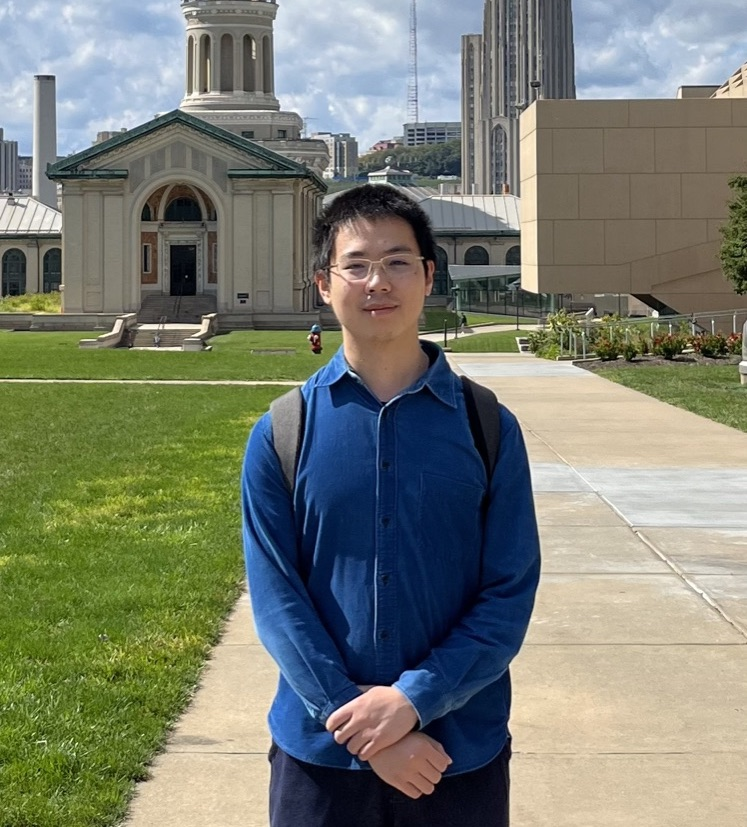

Yige Hong
Ph.D. student, Computer Science Department, Carnegie Mellon University

- CV (updated Aug 2026)
- Ph.D. Thesis (CMU-CS-26-119)
- Google Scholar
- GitHub
- DBLP
I'm a sixth-year Ph.D. student in the Computer Science Department of Carnegie Mellon University, where I'm very fortunate to be advised by Professor Weina Wang. I work on the performance analysis and optimal control of complex stochastic systems such as multiserver jobs, the G/G/k model, stochastic bin-packing, restless bandits, and weakly-coupled MDPs. A particular emphasis of my work is understanding these systems at a large scale, as motivated by the needs of data centers and other large service systems. I use stochastic analysis tools such as Lyapunov functions, coupling, and Stein's method to design scalable control policies with provable guarantees.
I will soon join the H. Milton Stewart School of Industrial and Systems Engineering (ISyE) at Georgia Tech as the Ronald J. and Carol T. Beerman Postdoctoral Fellow, working with Debankur Mukherjee and Siva Theja Maguluri. In Fall 2027, I will join the School of Science and Engineering at CUHK-Shenzhen as a faculty member.
Prior to starting my Ph.D., I was an undergraduate student at the Chinese University of Hong Kong, Shenzhen (CUHKSZ), where I graduated from the mathematics major with a Bachelor of Science degree.
Email:
yigeh [at] andrew [dot] cmu [dot] edu
(expiring soon)
Email:
hongyige98 [at] gmail [dot] com
Selected publications
*co-first-author, #undergraduate student jointly mentored with my Ph.D. advisor.
RBs = restless bandits; MDPs = Markov decision processes; WCMDPs = weakly-coupled MDPs.
See the full list of publications.